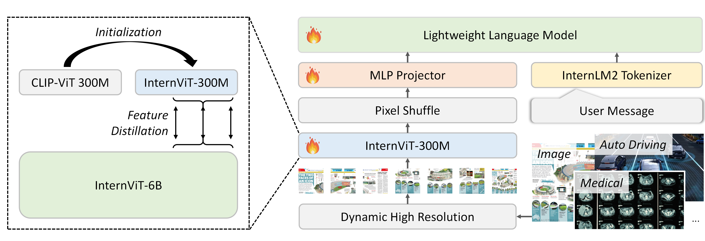

Mini-InternVL 2.0: A Flexible-Transfer Pocket Multimodal Model with 5% Parameters and 90% Performance
[🆕 Go Back] [📜 Mini-InternVL Report] [📜 InternVL 1.5 Report] [📖 Document] [ ModelScope] [🚀 Quick Start] [📖 中文解读]
ModelScope] [🚀 Quick Start] [📖 中文解读]
5% of the model size, 90% of the performance;
| Type | Model | Download | Note |
|---|---|---|---|
| Vision Large Language Model | Mini-InternVL2-1B | 🤗 HF link | 🚀 Only 1B parameters, anyone can deploy it locally. |
| Mini-InternVL2-2B | 🤗 HF link | 🚀 Only 2B parameters, anyone can deploy it locally. | |
| Mini-InternVL2-4B | 🤗 HF link | 🚀 5% of the model size, 90% of the performance. | |
| Vision Foundation Model | InternViT-300M-448px | 🤗 HF link | Distilled small vision foundation model with 300M parameters. |
We introduce Mini-InternVL 2.0, a series of MLLMs with parameters ranging from 1B to 4B, which achieves 90% of the performance with only 5% of the parameters. This significant improvement in efficiency and effectiveness makes our models more accessible and applicable in various real-world scenarios.
We employ InternViT-300M as our visual encoder, a lightweight vision model that inherits the capabilities of a powerful vision encoder. We directly leverage InternViT-6B that has undergone generative training on diverse datasets to transfer knowledge to a lightweight vision model, CLIP-ViT-L-336px. Our Report contains a more detailed introduction..

Performance
Mini-InternVL 2.0 demonstrates strong performance across the majority of benchmarks. Our smallest model contains only 1 billion parameters, yet it demonstrates performance comparable to 2 billion parameter models, such as DeepSeek-VL-1.3B and MiniCPM-V 2.0. Compared to other lightweight models, our Mini-InternVL2-4B excels across most benchmarks, particularly in MMbench, ChartQA, DocVQA, and MathVista, where its performance is on par with commercial models like Gemini-Pro-1.5. Notably, compared to InternVL2-Llama3-76B, which utilizes the larger InternViT-6B, Mini-InternVL 2.0 achieves approximately 90% of its performance while using 5% parameters. This highlights the effectiveness of our knowledge distillation strategy.
| name | MMMU (val) |
MathVista (testmini) |
AI2D (test) |
ChartQA (test) |
DocVQA (test) |
InfoVQA (test) |
OCRBench | MMB-EN (test) |
MMB-CN (test) |
OpenCompass (avg score) |
|---|---|---|---|---|---|---|---|---|---|---|
| GPT-4V* (20240409) |
61.7 | 58.1 | 89.4 | 78.1 | 87.2 | - | 678 | 81.0 | 80.2 | 63.5 |
| Gemini Pro 1.5* | 60.6 | 57.7 | 80.3 | 81.3 | 86.5 | 72.7 | 754 | 73.9 | 73.8 | 64.4 |
| Claude3.5-Sonnet* | 65.9 | 67.7 | 94.7 | 90.8 | 95.2 | - | 788 | 79.7 | 80.7 | 67.9 |
| GPT-4o* (20240513) |
69.2 | 63.8 | 94.2 | 85.7 | 92.8 | - | 736 | 83.4 | 82.1 | 69.9 |
| Cambrian-1 | 50.4 | 53.2 | 79.7 | 75.6 | 75.5 | - | 600 | 81.4 | - | 58.3 |
| LLaVA-NeXT Qwen1.5 | 50.1 | 49.0 | 80.4 | 79.7 | 85.7 | - | - | 80.5 | - | - |
| DeepSeek-VL-1.3B | 33.8 | 29.8 | 51.5 | - | - | - | 413 | 64.6 | 62.9 | 39.6 |
| MiniCPM-V 2.0 | 38.2 | 38.7 | 62.9 | - | 71.9 | - | 605 | 69.1 | 66.5 | 47.9 |
| Qwen2-VL-2B | 42.2 | 43.0 | 74.7 | 73.5 | 90.1 | 65.5 | 794 | 74.9 | 73.5 | 57.2 |
| InternVL2-Llama3-76B | 58.2 | 65.5 | 87.6 | 88.4 | 94.1 | 82.0 | 839 | 86.5 | 86.3 | 71.0 |
| Mini-InternVL2-1B | 36.7 | 37.7 | 64.1 | 72.9 | 81.7 | 50.9 | 754 | 65.4 | 60.7 | 48.3 |
| Mini-InternVL2-2B | 36.3 | 46.3 | 74.1 | 76.2 | 86.9 | 58.9 | 784 | 73.2 | 70.9 | 54.0 |
| Mini-InternVL2-4B | 48.3 | 58.6 | 78.9 | 81.5 | 89.2 | 67.0 | 788 | 78.6 | 73.9 | 60.6 |
- We simultaneously use InternVL and VLMEvalKit repositories for model evaluation. Specifically, the results reported for AI2D, ChartQA, DocVQA, InfoVQA, MMBench were tested using the InternVL repository. MMMU, MathVista and OCRBench were evaluated using the VLMEvalKit.
- Please note that evaluating the same model using different testing toolkits like InternVL and VLMEvalKit can result in slight differences, which is normal. Updates to code versions and variations in environment and hardware can also cause minor discrepancies in results.
Model Card
| Name | Mini-InternVL2-1B | Mini-InternVL2-2B | Mini-InternVL2-4B | |
|---|---|---|---|---|
| Model Size | Total | 0.94B | 2.21B | 4.15B |
| ViT | 304.01M | 304.01M | 304.01M | |
| MLP | 4.48M | 12.60M | 22.03M | |
| LLM | 0.63B | 1.89B | 3.82B | |
| Resolution | dynamic resolution, max to 12 tiles of 448 × 448 in training, max to 40 tiles in testing (4K resolution). | |||
| Training Data | We entend the pre-training dataset used in InternVL 1.5 with data collected from diverse sources. These datasets span multiple tasks, including captioning, visual question answering, detection, grounding, and OCR. The OCR datasets were constructed using PaddleOCR to perform OCR on Chinese images from Wukong and on English images from LaionCOCO, and were manually verified. Besides, we also crawled and manually parsed the exam data from uworld, kaptest, testbank, aga, and sat. The interleaved data from OmniCorpus was also utilized. | |||
| Trainable Module | ViT + MLP | MLP | ||
| Stage-2 | Training Data | We constructed the training data based on the 5M high-quality bilingual dataset used in InternVL 1.5. Specifically, we included video data such as EgoTaskQA, Mementos, STAR, NTU RGB+D, VideoChat2IT, and LSMDC-QA, as well as medical data such as Medical-Diff-VQA, Pathology-VQA, PMC-CaseReport, PMC-VQA, Slake, and VQA-RAD. We also included SROIE, FUNSD, and POIE to further enhance the model's ability to recognize handwritten fonts. Additionally, we excluded all data from ShareGPT-4V and replace it with data from ShareGPT-4o. | ||
| Trainable Module | ViT + MLP + LLM | |||
Domain Adaptation
To further promote the adoption of our models, we develop a unified adaptation framework for Mini-InternVL, which enables our models to transfer and outperform specialized models in downstream tasks, including autonomous driving, medical images, and remote sensing. We hope to provide insights into the application of MLLMs.
In Document, we provide detailed information on the datasets and the fine-tuning process.
The results on remote sensing VQA and visual grounding tasks. For the VQA datasets, we omit area and count questions during evaluation. "DA" means model after domain adaptation on remote sensing.
| Method | Size | RSVQA-LR | RSVQA-HR-Test1 | RSVQA-HR-Test2 | DIOR-RSVG (acc@0.5) | |||||||
|---|---|---|---|---|---|---|---|---|---|---|---|---|
| Rural/Urban | Presence | Compare | Avg. | Presence | Compare | Avg. | Presence | Compare | Avg. | - | ||
| RSVQA | - | 90.00 | 87.46 | 81.50 | 86.32 | 90.43 | 88.19 | 83.12 | 86.26 | 85.94 | 77.50 | - |
| Bi-Modal | - | 92.66 | 91.06 | 92.66 | 91.63 | 92.03 | 91.83 | 84.98 | 89.37 | 89.62 | 80.54 | - |
| EasyToHard | - | 91.67 | 90.66 | 87.49 | 89.94 | 91.39 | 89.75 | 93.97 | 87.97 | 87.68 | 79.06 | - |
| GeoChat | 7B | 94.00 | 91.09 | 90.33 | 90.70 | - | - | - | - | 58.45 | 83.19 | 72.30 |
| SkyEyeGPT | - | 75.00 | 88.93 | 88.63 | 84.19 | 84.95 | 85.63 | 85.29 | 83.50 | 80.28 | 81.89 | 88.59 |
| SkySenseGPT | - | 95.00 | 91.07 | 92.00 | 92.69 | - | - | - | 69.14 | 84.14 | 76.64 | - |
| Mini-InternVL-4B | 4B | 66.00 | 64.64 | 73.26 | 69.55 | 62.42 | 79.20 | 71.72 | 65.73 | 79.70 | 73.55 | 16.89 |
| InternVL2-Llama3-76B | 76B | 61.00 | 66.29 | 79.61 | 73.77 | 60.79 | 77.47 | 70.04 | 63.30 | 78.32 | 71.71 | 29.65 |
| Mini-InternVL-DA-1B | 1B | 95.00 | 81.39 | 91.6 | 87.37 | 92.24 | 91.76 | 91.98 | 89.38 | 90.91 | 90.24 | 89.73 |
| Mini-InternVL-DA-2B | 2B | 93.00 | 87.07 | 91.85 | 89.87 | 92.33 | 92.21 | 92.27 | 89.60 | 90.86 | 90.30 | 89.24 |
| Mini-InternVL-DA-4B | 4B | 92.00 | 85.69 | 92.18 | 89.46 | 92.42 | 92.12 | 92.25 | 89.25 | 90.92 | 90.18 | 92.04 |
The results of our model on GMAI-MMBench. The results of other models are taken from the GMAI-MMBench leaderboard. "DA" means model after domain adaptation on medical data. After supervised fine-tuning, our model shows significant improvement and outperforms several medical-specialized models (e.g., LLaVA-Med, RadFM) and some commercial closed-source models (e.g., Claude3-Opus) on most metrics.
| Model | Size | Seg C | Seg M | 2D Cls | 2D Det | 2D Mcls_acc | 2D Mcls_recall |
|---|---|---|---|---|---|---|---|
| Qwen-VL-Chat | 9.6B | 34.45 | 35.20 | 39.55 | 22.04 | 42.88 | 81.23 |
| LLaVA-NeXT-mistral-7B | 7.6B | 36.29 | 35.20 | 39.34 | 27.87 | 44.05 | 47.70 |
| LLaVA-Med | - | 18.45 | 18.97 | 21.15 | 17.14 | 45.84 | 41.19 |
| RadFM | 14B | 20.43 | 20.27 | 25.71 | 18.83 | 40.98 | 57.45 |
| Claude3-Opus | - | 33.56 | 33.36 | 32.17 | 24.72 | 45.31 | 38.98 |
| GPT-4V | - | 47.87 | 46.58 | 42.24 | 30.32 | 45.21 | 40.59 |
| Mini-InternVL-1B | 1B | 34.30 | 34.55 | 36.02 | 24.08 | 21.67 | 8.57 |
| Mini-InternVL-2B | 2B | 35.33 | 35.61 | 38.08 | 25.31 | 43.52 | 16.13 |
| Mini-InternVL-4B | 4B | 36.60 | 36.99 | 38.74 | 26.01 | 43.99 | 16.25 |
| Mini-InternVL-DA-1B | 1B | 38.67 | 39.44 | 35.87 | 23.09 | 22.79 | 8.99 |
| Mini-InternVL-DA-2B | 2B | 40.22 | 39.46 | 39.34 | 25.59 | 44.33 | 16.20 |
| Mini-InternVL-DA-4B | 4B | 41.41 | 40.45 | 41.34 | 24.84 | 44.33 | 16.59 |
The results on action and control signals prediction tasks of BDD-X dataset. In action tasks, we follow DriveGPT4 and provide evaluation results on action description, action justification, and full-text generation (i.e., combining description and justification). "B4" stands for BLEU4. RMSE denotes the root mean squared error, and Aτ measures the proportion of test samples with prediction errors less than τ. "DA" means model after domain adaptation on BDD-X.
| Method | Description | Justification | Full | ||||||
|---|---|---|---|---|---|---|---|---|---|
| CIDEr | B4 | ROUGE | CIDEr | B4 | ROUGE | CIDEr | B4 | ROUGE | |
| ADAPT | 219.35 | 33.42 | 61.83 | 94.62 | 9.95 | 32.01 | 93.66 | 17.76 | 44.32 |
| DriveGPT4 | 254.62 | 35.99 | 63.97 | 101.55 | 10.84 | 31.91 | 102.71 | 19.00 | 45.10 |
| Mini-InternVL-DA-1B | 223.85 | 34.17 | 62.11 | 95.52 | 9.70 | 32.58 | 83.72 | 16.78 | 44.29 |
| Mini-InternVL-DA-2B | 242.14 | 35.77 | 63.03 | 105.06 | 10.63 | 32.46 | 98.47 | 18.05 | 44.52 |
| Mini-InternVL-DA-4B | 237.41 | 35.94 | 63.67 | 104.62 | 9.51 | 32.23 | 97.42 | 17.70 | 44.98 |
| Method | Speed (m/s) | Turning Angle (degree) | ||||||||
|---|---|---|---|---|---|---|---|---|---|---|
| RMSE ↓ | A0.1 ↑ | A0.5 ↑ | A1.0 ↑ | A5.0 ↑ | RMSE ↓ | A0.1 ↑ | A0.5 ↑ | A1.0 ↑ | A5.0 ↑ | |
| ADAPT | 3.02 | 9.56 | 24.77 | 37.07 | 90.39 | 11.98 | 27.93 | 66.83 | 75.13 | 89.45 |
| DriveGPT4 | 1.30 | 30.09 | 60.88 | 79.92 | 98.44 | 8.98 | 59.23 | 72.89 | 79.59 | 95.32 |
| Mini-InternVL-DA-1B | 1.28 | 29.44 | 60.38 | 79.34 | 98.67 | 9.45 | 59.34 | 73.54 | 80.28 | 92.76 |
| Mini-InternVL-DA-2B | 1.26 | 27.96 | 59.23 | 80.06 | 98.78 | 9.52 | 57.40 | 72.54 | 80.06 | 92.04 |
| Mini-InternVL-DA-4B | 1.31 | 28.84 | 60.94 | 78.78 | 98.61 | 9.46 | 59.12 | 73.15 | 80.17 | 92.65 |
The results on driving with language official leaderboard. "DA" means model after domain adaptation on DriveLM. The other results in the table are taken from the 2024 Autonomous Driving Challenge leaderboard. MTMM†, MMFM_AD, and Team NVIDIA are team names on the challenge leaderboard, which we use to represent their methods.
| Method | #Param | Accuracy | ChatGPT | Bleu 1 | Bleu 2 | Bleu 3 | Bleu 4 | ROUGE L | CIDEr | Match | Final Score |
|---|---|---|---|---|---|---|---|---|---|---|---|
| InternVL4Drive-v2 | 26B | 0.7339 | 65.25 | 0.7787 | 0.7176 | 0.6608 | 0.6059 | 0.7449 | 0.2061 | 47.65 | 0.6002 |
| MTMM† | - | 0.7473 | 65.59 | 0.76 | 0.70 | 0.64 | 0.59 | 0.74 | 0.18 | 0.45 | 0.5974 |
| Team NVIDIA | - | 0.7746 | 59.89 | - | - | - | - | - | - | - | 0.5884 |
| MMFM_AD | - | 0.6658 | 63.92 | - | - | - | - | - | - | - | 0.5732 |
| Mini-InternVL-4B | 4B | 0.0 | 54.45 | 0.2405 | 0.0801 | 0.0252 | 0.0084 | 0.1927 | 0.0018 | 34.30 | 0.3051 |
| InternVL2-Llama3-76B | 76B | 0.0 | 52.50 | 0.2100 | 0.0884 | 0.0249 | 0.0078 | 0.1848 | 0.0001 | 34.22 | 0.2963 |
| Mini-InternVL-DA-1B | 1B | 0.7007 | 63.84 | 0.7362 | 0.6767 | 0.6214 | 0.5678 | 0.7365 | 0.1669 | 39.76 | 0.5686 |
| Mini-InternVL-DA-2B | 2B | 0.7628 | 65.23 | 0.7616 | 0.7012 | 0.6452 | 0.5908 | 0.7447 | 0.1914 | 43.24 | 0.5958 |
| Mini-InternVL-DA-4B | 4B | 0.7296 | 63.97 | 0.7642 | 0.7032 | 0.6463 | 0.5914 | 0.7427 | 0.1976 | 42.16 | 0.5821 |
Citation
@article{gao2024mini,
title={Mini-InternVL: A Flexible-Transfer Pocket Multimodal Model with 5\% Parameters and 90\% Performance},
author={Gao, Zhangwei and Chen, Zhe and Cui, Erfei and Ren, Yiming and Wang, Weiyun and Zhu, Jinguo and Tian, Hao and Ye, Shenglong and He, Junjun and Zhu, Xizhou and others},
journal={arXiv preprint arXiv:2410.16261},
year={2024}
}
@article{chen2023internvl,
title={InternVL: Scaling up Vision Foundation Models and Aligning for Generic Visual-Linguistic Tasks},
author={Chen, Zhe and Wu, Jiannan and Wang, Wenhai and Su, Weijie and Chen, Guo and Xing, Sen and Zhong, Muyan and Zhang, Qinglong and Zhu, Xizhou and Lu, Lewei and Li, Bin and Luo, Ping and Lu, Tong and Qiao, Yu and Dai, Jifeng},
journal={arXiv preprint arXiv:2312.14238},
year={2023}
}
@article{chen2024far,
title={How Far Are We to GPT-4V? Closing the Gap to Commercial Multimodal Models with Open-Source Suites},
author={Chen, Zhe and Wang, Weiyun and Tian, Hao and Ye, Shenglong and Gao, Zhangwei and Cui, Erfei and Tong, Wenwen and Hu, Kongzhi and Luo, Jiapeng and Ma, Zheng and others},
journal={arXiv preprint arXiv:2404.16821},
year={2024}
}